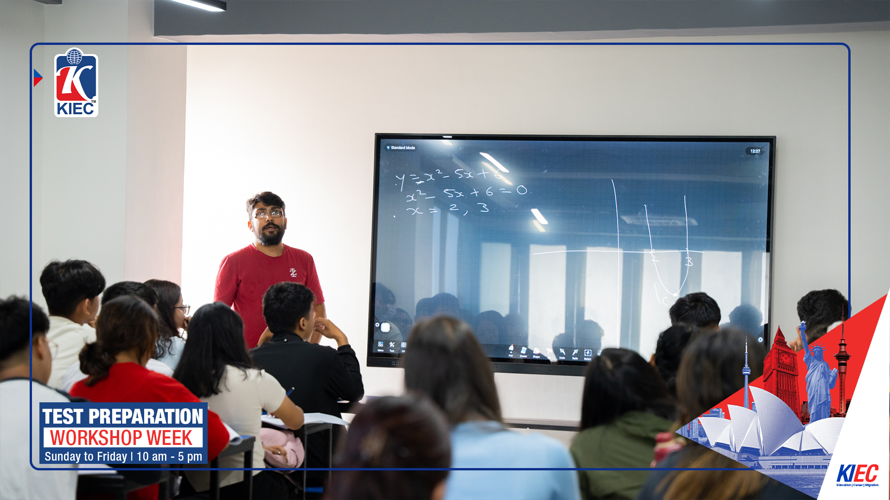
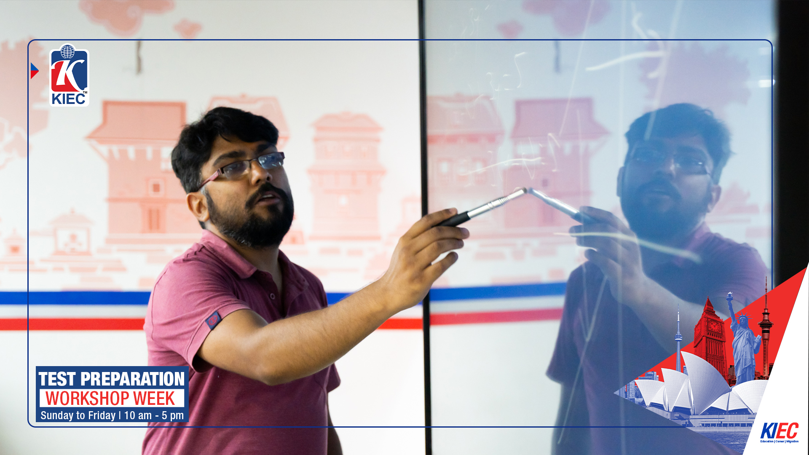

SAT Math Instructor
Classroom and remote SAT Math teaching, including structured preparation, advanced-score work and test review. Physical classes typically include 30–40 students.
SAT • TEACHING & COACHING
The useful question is why the student missed it, and what should change before the next one.
Classroom and remote SAT Math teaching, including structured preparation, advanced-score work and test review. Physical classes typically include 30–40 students.
One-to-one and small-group work with students in Nepal and internationally, including students from India, China, the United States and Europe.

HOW I TEACH
The same wrong choice can come from very different problems.
A student may not understand the concept. Another may understand it and lose the point to a sign. Another may solve for x correctly when the question asks for 2x. I ask for the approach first, identify where the reasoning changed direction, and then correct that part.

DESMOS
I teach Desmos for graph intersections, reconstructing equations from points, checking graphs and reviewing an answer when time remains.
But if the x-coordinate of a parabola's vertex can be recognized mentally before the equation is even typed, the calculator is not the shortcut. In many SAT problems, hand-solving is faster. Students should be able to choose rather than depend.
THE LAST 50 POINTS
Many of my students are aiming at 780+ in Math.
At that level, points disappear through smaller failures: careless arithmetic, staying too long when the mind goes blank, misreading the condition, solving correctly for the wrong quantity, or rushing because the clock has become visible.
The work becomes less about adding formulas and more about protecting reliable reasoning under exam conditions.
SELECTED STUDENT OUTCOMES
I do not publish student names, record locators or identifying information. These are selected examples, not a promise of future scores.
Selected score reports retained privately as supporting evidence. Personal student information is intentionally excluded from this public build.
WHY I KEEP TEACHING IT
Another twenty or thirty points can matter to an admission or scholarship decision.
Students working toward something that concrete listen differently, question their mistakes differently and come back after a bad test wanting another one. When a student brings that level of seriousness, I want the teaching on the other side of the table to match it.